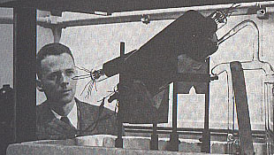

J Forrester
from World Dynamics Wright-Allen Press, Inc (1971)
The world system is encountering new pressures. By "world system" we mean man, his social systems, his technology, and the natural environment. These interact to produce growth, change, and stress. It is not new to have great forces generated from within the socio-technical-natural system. But only recently has mankind become aware of rising forces that cannot be resolved by the historical solutions of migration, expansion, economic growth, and technology. (1)
The manifestations of stress in the world system are excessive population, rising pollution, and disparity in standards of living. But are growing population, pollution, and economic inequality causes or symptoms? Can they be ameliorated directly, or do the causes of stress lie elsewhere in the world system? (1)
There is a growing awareness that past efforts to relieve stress in our social systems have often been, in retrospect, only efforts to suppress symptoms without altering the underlying causes. More and more, the world system is becoming tightly interrelated. An action in one sector of the system can produce consequences in another sector. Often the consequences are unintended and undesirable. We need to understand the ways in which the major factors are influencing one another on a world-wide scale if we are to have confidence that our actions will lead to improvement rather than to making matters worse. (1)
Our knowledge and assumptions about the components of a system, even systems as complex as our social systems, can now be interrelated and examined through methods that have been developed in the last several decades. Such is done by organizing the individual concepts into a "model" that reveals the consequences and internal inconsistencies of our assumptions and fragments of knowledge. From such an examination can come a much improved understanding of the world system within which we are enmeshed. (1)
This book sets forth a dynamic model of world scope, a model which interrelates population, capital investment, geographical space, natural resources, pollution, and food production. From these major sectors and their interactions appear to come the dynamics of change in the world system. Rising population creates pressures to increase industrialization, grow more food, and occupy more in land. But more food, material goods, and land tend to encourage and permit larger populations. The growth in population, with its attendant industrialization and pollution, comes from circular processes in which each sector both enhances and feeds on other sectors. But in time, growth encounters limits set by nature. Land and natural resources become exhausted, and the pollution-dissipation capacity of the earth becomes overloaded. (1, 2)
The battle between the forces of growth and the restraints of nature may be resolved in a number of ways. Man, if he understands well enough and acts wisely, can choose a path out of the conflict of world pressures that is more favorable than present actions, attitudes, and policies portend. Such a path must be toward a non-growing and balanced condition of the world system. The challenge is to choose the best available transition from the past dynamics of growth to a future condition of world equilibrium. (2)
Ever since Malthus stated his propositions relating population and food some 150 years ago, the validity of his assumption that food imposes an ultimate limit on population has been debated. The continued growth of population and the rise in the productivity of agriculture are often cited to refute Malthus. But it is undeniable that Malthus stated one ultimate barrier to unending population expansion. His assertion is not erroneous; it is merely incomplete. (2)
Food supply may not be the first barrier to restrain rising population. Other forces within the world's socio-technological system may suppress further increase in population before starvation does. (2)
Population, capital investment, pollution, food consumption, and standard of living have been growing exponentially throughout recorded history. Man has come to expect growth, to see it as the natural condition of human behavior, and to equate growth with "progress." We speak of the annual percentage growth in gross national product (GNP) and in population. Quantities that grow by a fixed percentage per year are exhibiting "exponential" growth. But exponential growth cannot continue indefinitely. (2)
Pure exponential growth possesses the characteristic of behaving according to a "doubling time." Each fixed time interval shows a doubling of the relevant system variable. Exponential growth is treacherous and misleading. A system variable can continue through many doubling intervals without seeming to reach significant size. But then, in one or two more doubling periods, still following the same law of exponential growth, it suddenly seems to become overwhelming. The psychological impact of exponential growth is seldom appreciated. Suppose that some ultimate physical limit stands in the way of a quantity that is growing exponentially. In all previous time before the limit is approached the quantity is much smaller than the limit. The very existence of the limit may be unrealized. No clash between the growing quantity and the limit forces attention to the eventual pressures that must arise. Then suddenly, within one doubling interval, the quantity grows from half the limit to the limit. The stresses from overexpansion become highly visible; they can no longer be ignored. If the pressures created by approach to the limit are not great enough to suppress growth, then growth continues until the limit has been overstepped far enough to generate forces sufficient to inhibit growth. (2, 3)
The world system can exhibit many alternative modes of behavior in response to different policies that man might follow in guiding population growth, capital investment generation, natural-resource usage, pollution control, and agricultural output. Figure 1-6 ... illustrates one possible future. Here population and capital investment grow until natural resources decline far enough to inhibit expansion. As resources decline still further, the world is unable to sustain the peak population. Population then declines along with capital investment. Quality of life depends on material standard of living, food supply, crowding and polllution. Quality of life in Figure 1-6 falls because of the pressures created by the shortage of natural resources. ... (9)
But the depletion of natural resources may not be the first and most likely pressure to limit the growth of population. The world today sems to be entering a condition in which pressures are rising simultaneously from every one of the influences that can suppress growth - depeleted resources, pollution, crowding, and insufficient food. It is still unclear which will dominate if mankind continues along the present path. The gradual peaking and decline of population in Figure 1-6 is less traumatic than other paths into equilibrium that teh world system may exhibit. (9, 10)
Instead of allowing a limit to growth to be imposed by declining resources, science may very well find ways to use the more plentiful metals and to increase our sources of energy so that resource depletion does not intervene. If so, the way then remains open for growth until some other pressure arises within the system. Figure 1-7 shows the result when the resource shortage is foreseen and avoided. Here the only change from the conditions of Figure 1-6 is the usage rate of natural resources after the year 1970. In Figure 1-7 after 1970, resources are assumed to be expended at only 25% of the rate assumed in Figure 1-6. In other words, to see whether a more desirable future is created, we assume that technology sustains the standard of living with a lower drain on the expendable and irreplaceable resources. (10)
But the picture becomes even less attractive. If resources hold out, Figure 1-7 shows population and capital investment rising until a population crisis is created. Pollution then acts directly to reduce birth rate, increase death rate, and to depress food production. Population, which according to this simple model peaks at the year 2030, has fallen to one-sixth of its highest level within an interval of 20 years. Such a plunge would be a world-wide catastrophe. Should it occur, one can speculate on which sectors of the world population would suffer most. It is quite possible that the more industrialized countries, from which the pollution comes, would be the least able to survive such a disruption to environment and food supply. They might be the ones to take the brunt of the collapse. There is now developing a strong undercurrent of doubt about technology as the savior of mankind. There is a basis for such doubt. We see in Figure 1-7 how one technological success (reducing our dependence on natural resources) can merely save us from fate only to make us the victims of something worse (a pollution catastrophe). (11)
The following issues are raised by the dynamic behavior shown by the model of world forces. ...
1. Industrialization may be a more fundamental disturbing force in world ecology than is population. In fact, the population explosion is perhaps best viewed as a result of technology and industrialization. ...
5. The high standard of living of modern industrial societies seems to result from a production of food and material goods that has been able to outrun the rising population. But, as agriculture reaches a space limit, as industrialization reaches a natural- resource limit, and as both reach a pollution limit, population tends to catch up. Population then grows until the "quality of life" falls far enough to stabilize population.
6. There may be no realistic hope of the present underdeveloped countries reaching the standard of living demonstrated by the present industrialized nations. The pollution and natural-resource load placed on the world environmental system by each person in an advanced country is probably 20 to 50 times greater than the load now generated by a person in an underdeveloped country. With 4 times as many people in underdeveloped countries as in the present developed countries, their rising to the economic level that has been set as a standard by the industrialized nations could mean an increase of 10 times in the natural- resource and pollution load on the world environment. ... In fact, the present disparity between the developed and underdeveloped nations may be equalized as much by a decline in the developed countries as by an improvement in the underdeveloped countries.
7. A society with a high level of industrialization may be non sustainable. It may be self-extinguishing if it exhausts its natural resources on which it depends. Or, if unending substitution for declining natural resources were possible, a new international strife over pollution or environmental rights might pull the average world-wide standard of living back to the level of a century ago.
8. From the long view of a hundred years hence, the present efforts of underdeveloped countries to industrialize may be unwise. They may now be closer to an ultimate equilibrium with the environment than are industrialized nations. ... If one of the several forces strong enough to cause a collapse in world population does arise, the underdeveloped countries might suffer far less than their share of the decline because economies with less organization, integration, and specialization are probably less vulnerable to disruption (11 - 13)
The system as described in Chapters 2 and 3 is discovered to be one in which growth is reversed by the pressures arising from declining natural resources. ...
The decline in population is caused ... by falling natural resources. The falling natural resources lower the effectiveness of capital investment and lower the material standard of living enough to reduce population. At about the year 2000, natural resources are falling steeply. The slope of the curve is such that, if usage continued at the same rate, natural resources would disappear by the year 2150.
In section 3.8 the supply of natural resources was assumed sufficient to last for 250 years at the 1970 rate of usage. But in Figure 4-1 the rate of usage ... rises another 50% between 1970 and 2000 because of the rising population and the increasing capital investment. Well before natural resources disappear, their shortage depresses the world system because of the natural- resources extraction multiplier ... that introduces the more difficult extraction task resulting from depleted and more diffuse stocks of resources. The effect of rising demand and falling supply is to create the dynamic consequences of shortage, not 250 years in the future, but only 30 to 50 years hence. (69)
Quality of life ... peaks around the year 1960. It has declined very little by the year 1970 and is near its all-time high. Is this reasonable? How can one explain a historical maximum in quality of life at a time when the world shows rising social unrest? The two become consistent if we compare expectations with actuality. Figure 4-1 shows an extension beyond 1940 of the quality of life curve prior to that year. The extension continues to rise along the slope that had characterized the first part of the century. But the actual curve has fallen away from the extended slope. (note: increasing at a decreasing rate) (70, 71)
The effect of reducing the demand for natural resources is to take one layer of restraint off the growth forces of the system. If natural resources no longer limit growth, the next growth-suppressing pressure will arise within the system.
Figure 4-5 (See Fig 1-7) shows pollution as the next barrier to appear ... (75)
The processes of pollution generation were not altered in the model by the reduced usage rate of natural resources. Some people argue that pollution is related directly to resource usage, but that seems only partially justified. A technology that is conserving rare metals might turn to chemicals and plastics with equivalent or higher pollution danger.
... Reaction to the pollution crisis depends on its dynamic nature and on the steps that are necessary to stop it from taking the course shown in the figure. If ... prevention requires a major cutback of industrial activity, the treatment will at first seem as serious as the disease. ... Faced with this dilemma, the most probable course of action is to wait and to hope that the pollution threat has been exaggerated. As a consequence of such indecision, the pollution cycle would continue. (75, 76)
The intuitively obvious "solutions" to social problems are apt to fall into one of several traps set by the character of complex systems. First, an attempt to relieve one set of symptoms may only create a new mode of system behavior that also has unpleasant consequences. Second, the attempt to produce short-term improvement often sets the stage for a long-term degradation. Third, the local goals of a part of the system often conflict with the objectives of a larger system. Fourth, people are often led to intervene at points in a system where little leverage exists and where effort and money have but slight effect. (94)
As to the second characteristic, social systems usually exhibit fundamental conflict between the short-term and long-term consequences of a policy change. A policy which produces improvement in the short run is usually one which degrades the system in the long run. Short run and long run must be defined in terms of the dynamic responses in the system of interest. In corporate affairs, short run might be one to three years and long run beyond five years. In urban or national issues, short run could be a decade, while long run might be twenty years or more. In world dynamics, short run is several decades, and long run is fifty years to several centuries. Policies and programs which produce long-run improvement may initially depress the behavior of a system. This is especially treacherous. The short run is more visible and more compelling. It speaks loudly for immediate attention. But a series of actions all aimed at short-term improvement can eventually burden a system with long-run depressants so severe that even heroic short-run measures no longer suffice. ... (94)
Increased industrialization, created by a higher rate of capital investment, may be one of those system interventions that eventually succeeds only in exchanging one system stress for another ... (95)
As a result, the pollution crisis reappears. In figure 4-5 the pollution crisis occurred because natural resources were depleted slowly enough that population and industrialization exceeded the pollution-absorption capability of the earth. Here in Figure 5-1 the pollution crisis occurs because industrialization is rushed and reaches the pollution limit before the industrial society has existed long enough to deplete resources. (96)
A number of studies of social systems have resulted in models that generate life cycles that start with growth and merge into equilibrium. There are always severe stresses in the transition. Pressures must rise far enough to suppress the forces that produced growth. Not only is the world facing the pressures that will stop population growth, but it also is encountering the pressures that will stop the rise of both industrialization and the world average of standard of living. (112)
If growth is to be stopped, the kind of positive-feedback loops illustrated in Figures 2-2, 2-3, and 2-8 must be deactivated. Doing this through direct population control alone will almost certainly fail. Efforts to achieve population stabilization through birth-control programs probably will not prove to be effective leverage points in the system. On the other hand, capital investment and food supply are both within the major growth loops and may be points of strong influence. (113)
Figures 6-7 and 6-8 mean an end to population growth and to rising standard of living. They suggest a reversal of the emphasis on economic development. Reduction of investment rate and reduction in agricultural productivity are counter intuitive and not likely to be accepted without extensive system studies and years of argument - perhaps more years than are available. (120, 121)
Impending changes in the world system threaten modern social values and goals. The industrialized societies have become geared to a philosophy of growth and rising standard of living for everyone. This cannot continue indefinitely. New human purposes must be defined to replace the quest for economic advancement. Nature must be helped rather than conquered. Civilization must be restrained rather than expanded. Social pressures probably must increase rather than decline, until those pressures can be transformed into a change in social values that take satisfaction from an equilibrium society.
The underdeveloped countries face equally traumatic changes in goals. They now aspire to reach the level of industrialization of the advanced countries. But they may already be in better balance with the environment than the countries they try to emulate. (125)